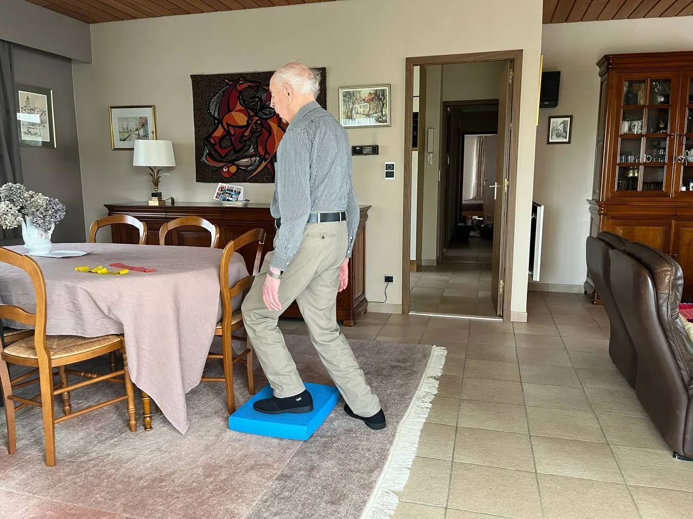

De achillespees is de sterkste pees van het lichaam: bij elke stap, sprong of duwbeweging draagt hij tot zeven keer uw lichaamsgewicht. Net daarom is een achillespeesblessure zo hardnekkig — en zo frustrerend. Of het nu gaat om een sluipende ontsteking (tendinopathie) of een acute scheur (ruptuur): de juiste, geleidelijke belasting is de sleutel tot herstel, niet rust alleen. In dit artikel legt PhysioVisit uit hoe een achillespees geneest, welke oefeningen u thuis kunt doen en wanneer begeleiding door een kinesitherapeut het verschil maakt.
Belasting heelt de pees, rust niet
Anders dan bij veel andere blessures is langdurige rust bij een achillespeesontsteking contraproductief. Peesweefsel wordt sterker door gedoseerde belasting. Het geheim zit in de juiste dosering — en daar speelt kinesitherapie een centrale rol.
Soorten Achillespeesklachten
Niet elke pijn aan de achillespees is hetzelfde. We onderscheiden grofweg drie situaties, elk met een eigen aanpak:
- Achillespees-tendinopathie (ontsteking) — geleidelijk opkomende pijn en stijfheid, vaak 2 tot 6 cm boven de hiel (midportie) of net op de aanhechting aan het hielbeen (insertie). Typisch het ergst bij de eerste stappen 's ochtends.
- Gedeeltelijke scheur — een deel van de peesvezels scheurt, vaak na een acute overbelasting bovenop een al verzwakte pees.
- Volledige ruptuur — de pees scheurt volledig door, meestal met een "knal"-gevoel en het onvermogen om op de tenen te staan. Dit vereist een arts en soms een operatie.
De oorzaken lopen uiteen: een plotse toename van trainingsvolume, slechte schoenen, verkorte kuitspieren, overgewicht, of leeftijd (de pees wordt na het veertigste levensjaar minder elastisch). Bij twijfel over de ernst is een echografie of een onderzoek bij arts of kinesitherapeut aangewezen.
De Herstelfasen op een Rij
Een achillespees geneest in fasen. Elke fase heeft een eigen doel en een eigen type belasting. Te snel doorschuiven is de belangrijkste oorzaak van een terugval.

Isometrisch spannen
kuitoefeningen
gewicht
specifiek
Indicatieve fasen bij achillespeestendinopathie. De duur per fase verschilt per persoon en wordt bepaald door pijn en belastbaarheid.
Fase 1 — Pijn Onder Controle
In de acute fase staat het dempen van de prikkeling centraal. Volledige stilstand is niet nodig, maar pijnlijke activiteiten (hardlopen, springen, lang stappen op harde grond) worden tijdelijk afgebouwd. Isometrische oefeningen — de kuit aanspannen en de spanning 30 tot 45 seconden vasthouden zonder te bewegen — verlichten de pijn en houden de pees actief. Vijf herhalingen, twee tot drie keer per dag. IJs na activiteit kan de pijn verzachten.
Fase 2 — Excentrische Kuitoefeningen
Dit is de kern van de revalidatie en de best onderbouwde behandeling bij achillespeestendinopathie. U gaat op de bal van uw voeten staan op de rand van een traptrede en laat vervolgens langzaam de hiel onder het traptredeniveau zakken. Het omhoog komen doet u met twee benen (of het gezonde been), het zakken met enkel het aangedane been. Een typisch schema (het "Alfredson-protocol"):
- 3 reeksen van 15 herhalingen met gestrekte knie
- 3 reeksen van 15 herhalingen met gebogen knie
- Twee keer per dag, zeven dagen per week, gedurende 12 weken
Een beetje pijn tijdens de oefening (tot 4 op 10) mag; verergert de pijn de ochtend nadien, dan was de belasting te hoog. Begin op de vlakke grond als de traptrede te zwaar is. Lees ook ons artikel over het verschil tussen actieve en passieve revalidatie om te begrijpen waarom actief oefenen hier zo belangrijk is.
Bij een vermoeden van een volledige scheur: niet oefenen
Voelt u een plotse "knal" aan de achterzijde van uw enkel, kunt u niet meer op uw tenen staan of is er een duidelijke deuk in de pees voelbaar? Doe dan géén oefeningen en raadpleeg dringend een arts. Een volledige achillespeesruptuur vraagt een specifieke aanpak (gips, laars of operatie) en een ander revalidatietraject.
Fase 3 en 4 — Kracht en Terugkeer naar Sport
Zodra de excentrische oefeningen pijnvrij verlopen, wordt de belasting opgevoerd: kuitheffingen met gewicht (rugzak, halter), oefeningen op één been en geleidelijk meer dynamische bewegingen. In de laatste fase komen sportspecifieke prikkels aan bod: huppelen, touwtjespringen, en bij hardlopers een opbouwend loopschema. De terugkeer naar volle sportbelasting gebeurt stapsgewijs over weken, niet dagen. Een kinesitherapeut toetst telkens of de pees klaar is voor de volgende stap.
Wanneer Kinesitherapie aan Huis?
Veel mensen starten zelf met oefeningen, maar lopen vast: te snel, te traag, of met verkeerde techniek. Kinesitherapie aan huis biedt dan uitkomst — zeker als verplaatsen lastig is door de pijn. Een kinesitherapeut:
- Stelt de juiste diagnose (midportie- versus insertietendinopathie vraagt een andere aanpak)
- Doseert de belasting precies op uw belastbaarheid
- Voegt technieken toe zoals shockwave, dwarse fricties of dry needling waar nuttig
- Corrigeert onderliggende factoren: verkorte kuitspieren, een slechte voetstand of looptechniek
- Houdt u gemotiveerd in een traject dat maanden duurt
PhysioVisit komt bij u thuis in de regio Grimbergen, Strombeek-Bever, Humbeek, Beigem en Koningslo. Ontdek ook onze pagina over orthopedische revalidatie en lees gerelateerde artikels over revalidatie na een enkelverstuiking en evenwichtsoefeningen voor thuis.
Praktische Tips voor uw Achillespees
- Bouw geleidelijk op: verhoog uw trainingsvolume met maximaal 10% per week.
- Warm op vóór het sporten en rek de kuit nadien rustig op.
- Kies goede schoenen met voldoende demping; een tijdelijk hielkussentje kan de pees ontlasten.
- Vermijd plotse pieken: heuvels, sprints en springen bouwt u pas laat weer op.
- Luister naar de ochtendpijn: meer stijfheid 's ochtends betekent dat u de dag voordien te veel deed.
- Blijf consistent: peesherstel duurt maanden — sla geen oefendagen over.
Hoe Lang Duurt het Herstel?
Bij een tendinopathie ziet u met consequente oefentherapie meestal na 6 tot 12 weken duidelijke verbetering, met volledig herstel binnen 3 tot 6 maanden. Na een volledige ruptuur duurt de revalidatie 6 tot 12 maanden tot volledige sporthervatting. Geduld loont: de pees die u nu rustig en gedoseerd belast, is over enkele maanden sterker dan ooit.
Veelgestelde Vragen over Achillespees Revalidatie
Hardnekkige Achillespeesklachten?
Onze kinesitherapeuten komen bij u thuis in de regio Grimbergen en stellen een persoonlijk oefenprogramma op. Geen verre verplaatsingen, wel deskundige begeleiding.
Conclusie
Een achillespeesblessure test uw geduld, maar de uitkomst is bijna altijd goed wanneer u de pees gedoseerd blijft belasten in plaats van volledig te rusten. Excentrische kuitoefeningen vormen de ruggengraat van de behandeling, aangevuld met een stapsgewijze opbouw naar kracht en sport. De grootste valkuil is te snel willen gaan — en net daar maakt deskundige begeleiding het verschil.
Heeft u in de regio Grimbergen nood aan begeleiding aan huis? Neem contact op met PhysioVisit: onze kinesitherapeuten Timothy en Charlotte stellen samen met u een realistisch revalidatieplan op en volgen uw vooruitgang op de voet.
Gerelateerde Artikelen
Revalidatie na Enkelverstuiking
Een verzwikte enkel is meer dan een blauwe plek. Ontdek de herstelfasen, oefeningen voor thuis en hoe u chronische instabiliteit voorkomt.
Lees meerEvenwichtsoefeningen voor Thuis
Verbeter uw balans en stabiliteit met eenvoudige oefeningen die u thuis kunt doen — goed voor enkel, knie en algehele coordinatie.
Lees meer